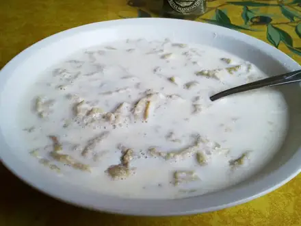
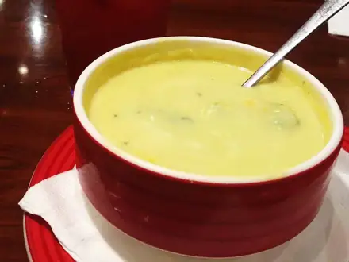
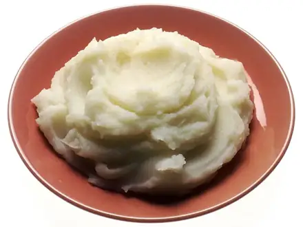
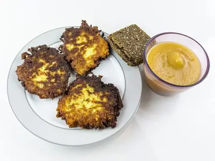
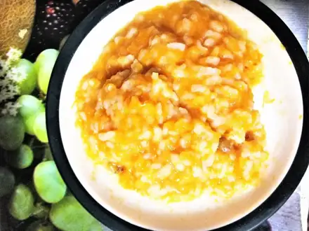
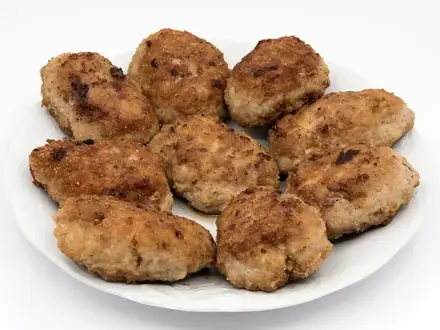
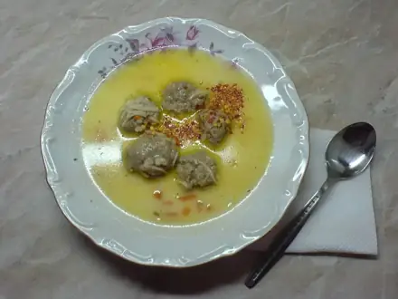
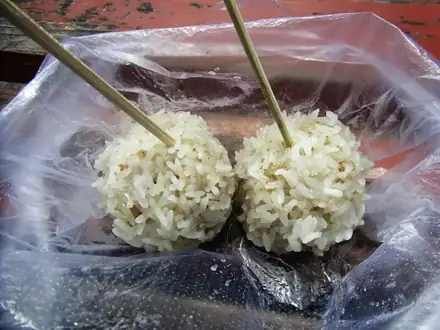
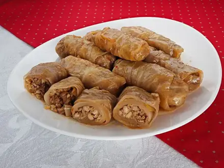

Что приготовить ребёнку
Блюда, которые обычно нравятся детям, без острого. 148 рецептов: у каждого время, калории и БЖУ на порцию, пошаговые инструкции и список покупок
 Смузи банан-ягоды5 мин · 158 ккал · Б 5 г · Напиток
Смузи банан-ягоды5 мин · 158 ккал · Б 5 г · Напиток Шоколадный кекс в кружке в микроволновке7 мин · 506 ккал · Б 15 г · Десерт
Шоколадный кекс в кружке в микроволновке7 мин · 506 ккал · Б 15 г · Десерт Яйца всмятку и в мешочек10 мин · 173 ккал · Б 14 г · Завтрак
Яйца всмятку и в мешочек10 мин · 173 ккал · Б 14 г · Завтрак Манная каша10 мин · 307 ккал · Б 10 г · Завтрак
Манная каша10 мин · 307 ккал · Б 10 г · Завтрак Салат из свежих овощей10 мин · 130 ккал · Б 2 г · Салат
Салат из свежих овощей10 мин · 130 ккал · Б 2 г · Салат Овсяная каша на молоке12 мин · 347 ккал · Б 12 г · Завтрак
Овсяная каша на молоке12 мин · 347 ккал · Б 12 г · Завтрак Гренки сладкие15 мин · 279 ккал · Б 9 г · Завтрак
Гренки сладкие15 мин · 279 ккал · Б 9 г · Завтрак Банановые панкейки из трёх продуктов15 мин · 294 ккал · Б 11 г · Завтрак
Банановые панкейки из трёх продуктов15 мин · 294 ккал · Б 11 г · Завтрак Творожный десерт с ягодами без выпечки15 мин · 204 ккал · Б 21 г · Десерт
Творожный десерт с ягодами без выпечки15 мин · 204 ккал · Б 21 г · Десерт Мацебрай15 мин · 368 ккал · Б 15 г · Завтрак
Мацебрай15 мин · 368 ккал · Б 15 г · Завтрак Омлет с курицей15 мин · 361 ккал · Б 34 г · Завтрак
Омлет с курицей15 мин · 361 ккал · Б 34 г · Завтрак Феттучине Альфредо15 мин · 759 ккал · Б 23 г · Второе блюдо
Феттучине Альфредо15 мин · 759 ккал · Б 23 г · Второе блюдо Жареная гречка с яйцом и луком15 мин · 445 ккал · Б 16 г · Второе блюдо
Жареная гречка с яйцом и луком15 мин · 445 ккал · Б 16 г · Второе блюдо Сосиски в лаваше с сыром на сковороде15 мин · 643 ккал · Б 30 г · Второе блюдо
Сосиски в лаваше с сыром на сковороде15 мин · 643 ккал · Б 30 г · Второе блюдо Омлет на пару20 мин · 223 ккал · Б 16 г · Завтрак
Омлет на пару20 мин · 223 ккал · Б 16 г · Завтрак Овощи на пару20 мин · 127 ккал · Б 5 г · Гарнир
Овощи на пару20 мин · 127 ккал · Б 5 г · Гарнир Макароны с сыром20 мин · 453 ккал · Б 18 г · Гарнир
Макароны с сыром20 мин · 453 ккал · Б 18 г · Гарнир Сосиски в томатном соусе с луком20 мин · 444 ккал · Б 16 г · Второе блюдо
Сосиски в томатном соусе с луком20 мин · 444 ккал · Б 16 г · Второе блюдо Хек жареный на сковороде20 мин · 292 ккал · Б 31 г · Второе блюдо
Хек жареный на сковороде20 мин · 292 ккал · Б 31 г · Второе блюдо Паста с беконом и горошком в сливках20 мин · 765 ккал · Б 30 г · Второе блюдо
Паста с беконом и горошком в сливках20 мин · 765 ккал · Б 30 г · Второе блюдо Макароны с яйцом на сковороде20 мин · 521 ккал · Б 21 г · Второе блюдо
Макароны с яйцом на сковороде20 мин · 521 ккал · Б 21 г · Второе блюдо Паста с помидорами и моцареллой20 мин · 690 ккал · Б 27 г · Второе блюдо
Паста с помидорами и моцареллой20 мин · 690 ккал · Б 27 г · Второе блюдо Цветная капуста, жаренная с яйцом20 мин · 341 ккал · Б 18 г · Второе блюдо
Цветная капуста, жаренная с яйцом20 мин · 341 ккал · Б 18 г · Второе блюдо Стручковая фасоль с яйцом20 мин · 330 ккал · Б 19 г · Второе блюдо
Стручковая фасоль с яйцом20 мин · 330 ккал · Б 19 г · Второе блюдо Страчателла: итальянский суп с яйцом и шпинатом20 мин · 266 ккал · Б 33 г · Суп
Страчателла: итальянский суп с яйцом и шпинатом20 мин · 266 ккал · Б 33 г · Суп Суп-пюре из зелёного горошка20 мин · 228 ккал · Б 8 г · Суп
Суп-пюре из зелёного горошка20 мин · 228 ккал · Б 8 г · Суп Фриттата с макаронами20 мин · 565 ккал · Б 31 г · Второе блюдо
Фриттата с макаронами20 мин · 565 ккал · Б 31 г · Второе блюдо Картофельные оладьи из вчерашнего пюре с сыром20 мин · 530 ккал · Б 17 г · Второе блюдо
Картофельные оладьи из вчерашнего пюре с сыром20 мин · 530 ккал · Б 17 г · Второе блюдо Кесадилья с курицей и сыром20 мин · 775 ккал · Б 54 г · Второе блюдо
Кесадилья с курицей и сыром20 мин · 775 ккал · Б 54 г · Второе блюдо Конвертики из лаваша с ветчиной и сыром на сковороде20 мин · 768 ккал · Б 37 г · Второе блюдо
Конвертики из лаваша с ветчиной и сыром на сковороде20 мин · 768 ккал · Б 37 г · Второе блюдо Горячие бутерброды с фаршем на сковороде20 мин · 773 ккал · Б 31 г · Второе блюдо
Горячие бутерброды с фаршем на сковороде20 мин · 773 ккал · Б 31 г · Второе блюдо
Гречневая каша с молоком25 мин · 272 ккал · Б 11 г · Завтрак Гречка рассыпчатая25 мин · 156 ккал · Б 6 г · Гарнир
Гречка рассыпчатая25 мин · 156 ккал · Б 6 г · Гарнир Рис рассыпчатый25 мин · 194 ккал · Б 3 г · Гарнир
Рис рассыпчатый25 мин · 194 ккал · Б 3 г · Гарнир Сочная куриная грудка на сковороде25 мин · 275 ккал · Б 47 г · Второе блюдо
Сочная куриная грудка на сковороде25 мин · 275 ккал · Б 47 г · Второе блюдо Рыба на пару с лимоном25 мин · 170 ккал · Б 36 г · Второе блюдо
Рыба на пару с лимоном25 мин · 170 ккал · Б 36 г · Второе блюдо Паста с томатным соусом25 мин · 479 ккал · Б 13 г · Второе блюдо
Паста с томатным соусом25 мин · 479 ккал · Б 13 г · Второе блюдо Сырный омлет-фриттата25 мин · 354 ккал · Б 24 г · Завтрак
Сырный омлет-фриттата25 мин · 354 ккал · Б 24 г · Завтрак Пюре из кабачка и цветной капусты25 мин · 46 ккал · Б 2 г · Гарнир
Пюре из кабачка и цветной капусты25 мин · 46 ккал · Б 2 г · Гарнир Мини-пиццы на лаваше25 мин · 375 ккал · Б 20 г · Закуска
Мини-пиццы на лаваше25 мин · 375 ккал · Б 20 г · Закуска Протеиновые блины на твороге25 мин · 344 ккал · Б 29 г · Завтрак
Протеиновые блины на твороге25 мин · 344 ккал · Б 29 г · Завтрак Оладьи из вчерашнего риса25 мин · 380 ккал · Б 10 г · Завтрак
Оладьи из вчерашнего риса25 мин · 380 ккал · Б 10 г · Завтрак Куриные отбивные в кляре25 мин · 428 ккал · Б 54 г · Второе блюдо
Куриные отбивные в кляре25 мин · 428 ккал · Б 54 г · Второе блюдо Шницель из индейки25 мин · 447 ккал · Б 40 г · Второе блюдо
Шницель из индейки25 мин · 447 ккал · Б 40 г · Второе блюдо Треска в сметане на сковороде25 мин · 328 ккал · Б 32 г · Второе блюдо
Треска в сметане на сковороде25 мин · 328 ккал · Б 32 г · Второе блюдо Рыба по-польски25 мин · 340 ккал · Б 33 г · Второе блюдо
Рыба по-польски25 мин · 340 ккал · Б 33 г · Второе блюдо Треска в сырной корочке в духовке25 мин · 283 ккал · Б 37 г · Второе блюдо
Треска в сырной корочке в духовке25 мин · 283 ккал · Б 37 г · Второе блюдо Паста с курицей в сливочном соусе25 мин · 678 ккал · Б 40 г · Второе блюдо
Паста с курицей в сливочном соусе25 мин · 678 ккал · Б 40 г · Второе блюдо Макароны с сосисками в томатном соусе25 мин · 612 ккал · Б 20 г · Второе блюдо
Макароны с сосисками в томатном соусе25 мин · 612 ккал · Б 20 г · Второе блюдо Паста с тыквой в сливочном соусе25 мин · 660 ккал · Б 19 г · Второе блюдо
Паста с тыквой в сливочном соусе25 мин · 660 ккал · Б 19 г · Второе блюдо Молодой картофель с укропом и чесноком25 мин · 338 ккал · Б 6 г · Второе блюдо
Молодой картофель с укропом и чесноком25 мин · 338 ккал · Б 6 г · Второе блюдо Крем-суп из брокколи с сыром25 мин · 324 ккал · Б 14 г · Суп
Крем-суп из брокколи с сыром25 мин · 324 ккал · Б 14 г · Суп Крем-суп из кабачков25 мин · 199 ккал · Б 4 г · Суп
Крем-суп из кабачков25 мин · 199 ккал · Б 4 г · Суп Тако с говяжьим фаршем25 мин · 786 ккал · Б 33 г · Второе блюдо
Тако с говяжьим фаршем25 мин · 786 ккал · Б 33 г · Второе блюдо Крок-месье25 мин · 755 ккал · Б 31 г · Второе блюдо
Крок-месье25 мин · 755 ккал · Б 31 г · Второе блюдо Сырники30 мин · 398 ккал · Б 28 г · Завтрак
Сырники30 мин · 398 ккал · Б 28 г · Завтрак Минтай в кляре30 мин · 366 ккал · Б 30 г · Второе блюдо
Минтай в кляре30 мин · 366 ккал · Б 30 г · Второе блюдо Паста с грибами в сливках30 мин · 602 ккал · Б 17 г · Второе блюдо
Паста с грибами в сливках30 мин · 602 ккал · Б 17 г · Второе блюдо Курица терияки30 мин · 485 ккал · Б 38 г · Второе блюдо
Курица терияки30 мин · 485 ккал · Б 38 г · Второе блюдо Ленивые вареники30 мин · 365 ккал · Б 29 г · Завтрак
Ленивые вареники30 мин · 365 ккал · Б 29 г · Завтрак Бутерброды-ёжики (канапе)30 мин · 299 ккал · Б 13 г · Закуска
Бутерброды-ёжики (канапе)30 мин · 299 ккал · Б 13 г · Закуска Курица с грибами в сметане30 мин · 426 ккал · Б 46 г · Второе блюдо
Курица с грибами в сметане30 мин · 426 ккал · Б 46 г · Второе блюдо Рубленые куриные котлеты с сыром30 мин · 465 ккал · Б 50 г · Второе блюдо
Рубленые куриные котлеты с сыром30 мин · 465 ккал · Б 50 г · Второе блюдо Куриные отбивные с помидорами и сыром в духовке30 мин · 442 ккал · Б 59 г · Второе блюдо
Куриные отбивные с помидорами и сыром в духовке30 мин · 442 ккал · Б 59 г · Второе блюдо Куриные биточки с кабачком30 мин · 327 ккал · Б 25 г · Второе блюдо
Куриные биточки с кабачком30 мин · 327 ккал · Б 25 г · Второе блюдо Курица, запечённая с брокколи и сыром30 мин · 481 ккал · Б 53 г · Второе блюдо
Курица, запечённая с брокколи и сыром30 мин · 481 ккал · Б 53 г · Второе блюдо Пожарские котлеты из курицы30 мин · 497 ккал · Б 30 г · Второе блюдо
Пожарские котлеты из курицы30 мин · 497 ккал · Б 30 г · Второе блюдо Курица с кабачками и помидорами на сковороде30 мин · 316 ккал · Б 42 г · Второе блюдо
Курица с кабачками и помидорами на сковороде30 мин · 316 ккал · Б 42 г · Второе блюдо Котлеты из индейки с кабачком30 мин · 337 ккал · Б 27 г · Второе блюдо
Котлеты из индейки с кабачком30 мин · 337 ккал · Б 27 г · Второе блюдо Печёночные оладьи из говяжьей печени30 мин · 374 ккал · Б 28 г · Второе блюдо
Печёночные оладьи из говяжьей печени30 мин · 374 ккал · Б 28 г · Второе блюдо Шведские фрикадельки в сливочном соусе30 мин · 584 ккал · Б 26 г · Второе блюдо
Шведские фрикадельки в сливочном соусе30 мин · 584 ккал · Б 26 г · Второе блюдо Зразы мясные с яйцом30 мин · 546 ккал · Б 29 г · Второе блюдо
Зразы мясные с яйцом30 мин · 546 ккал · Б 29 г · Второе блюдо Рыбные палочки домашние в духовке30 мин · 295 ккал · Б 34 г · Второе блюдо
Рыбные палочки домашние в духовке30 мин · 295 ккал · Б 34 г · Второе блюдо Рыба, запечённая с омлетом, как в детском саду30 мин · 245 ккал · Б 32 г · Второе блюдо
Рыба, запечённая с омлетом, как в детском саду30 мин · 245 ккал · Б 32 г · Второе блюдо Макароны с курицей и овощами на сковороде30 мин · 557 ккал · Б 35 г · Второе блюдо
Макароны с курицей и овощами на сковороде30 мин · 557 ккал · Б 35 г · Второе блюдо Спагетти с фрикадельками в томатном соусе30 мин · 667 ккал · Б 29 г · Второе блюдо
Спагетти с фрикадельками в томатном соусе30 мин · 667 ккал · Б 29 г · Второе блюдо Рис с фаршем на сковороде30 мин · 543 ккал · Б 23 г · Второе блюдо
Рис с фаршем на сковороде30 мин · 543 ккал · Б 23 г · Второе блюдо Курица с рисом в сливочном соусе на сковороде30 мин · 516 ккал · Б 32 г · Второе блюдо
Курица с рисом в сливочном соусе на сковороде30 мин · 516 ккал · Б 32 г · Второе блюдо Булгур с курицей и помидорами30 мин · 464 ккал · Б 34 г · Второе блюдо
Булгур с курицей и помидорами30 мин · 464 ккал · Б 34 г · Второе блюдо Пшено с курицей и овощами30 мин · 441 ккал · Б 32 г · Второе блюдо
Пшено с курицей и овощами30 мин · 441 ккал · Б 32 г · Второе блюдо Жареная картошка с сосисками и луком30 мин · 529 ккал · Б 14 г · Второе блюдо
Жареная картошка с сосисками и луком30 мин · 529 ккал · Б 14 г · Второе блюдо Ризи-бизи (рис с зелёным горошком)30 мин · 571 ккал · Б 20 г · Второе блюдо
Ризи-бизи (рис с зелёным горошком)30 мин · 571 ккал · Б 20 г · Второе блюдо Кабачковые оладьи с сыром и чесноком30 мин · 544 ккал · Б 18 г · Второе блюдо
Кабачковые оладьи с сыром и чесноком30 мин · 544 ккал · Б 18 г · Второе блюдо Кабачки, запечённые с творогом и сыром30 мин · 487 ккал · Б 37 г · Второе блюдо
Кабачки, запечённые с творогом и сыром30 мин · 487 ккал · Б 37 г · Второе блюдо Кабачки, тушённые в сметане30 мин · 446 ккал · Б 7 г · Второе блюдо
Кабачки, тушённые в сметане30 мин · 446 ккал · Б 7 г · Второе блюдо Баклажаны, запечённые с помидорами и сыром30 мин · 414 ккал · Б 19 г · Второе блюдо
Баклажаны, запечённые с помидорами и сыром30 мин · 414 ккал · Б 19 г · Второе блюдо Запеканка из брокколи с яйцом и сыром30 мин · 466 ккал · Б 33 г · Второе блюдо
Запеканка из брокколи с яйцом и сыром30 мин · 466 ккал · Б 33 г · Второе блюдо Морковные котлеты с манкой30 мин · 564 ккал · Б 16 г · Второе блюдо
Морковные котлеты с манкой30 мин · 564 ккал · Б 16 г · Второе блюдо Суп с индейкой и кабачком30 мин · 157 ккал · Б 25 г · Суп
Суп с индейкой и кабачком30 мин · 157 ккал · Б 25 г · Суп Запеканка из пюре с курицей и сыром30 мин · 615 ккал · Б 41 г · Второе блюдо
Запеканка из пюре с курицей и сыром30 мин · 615 ккал · Б 41 г · Второе блюдо Котлеты из отварной курицы30 мин · 518 ккал · Б 41 г · Второе блюдо
Котлеты из отварной курицы30 мин · 518 ккал · Б 41 г · Второе блюдо- Оладьи на кефире35 мин · 441 ккал · Б 13 г · Завтрак
 Запечённые яблоки с мёдом и орехами35 мин · 119 ккал · Б 1 г · Десерт
Запечённые яблоки с мёдом и орехами35 мин · 119 ккал · Б 1 г · Десерт
Сырный суп35 мин · 374 ккал · Б 17 г · Суп
Картофельное пюре35 мин · 312 ккал · Б 6 г · Гарнир Макароны по-флотски35 мин · 719 ккал · Б 33 г · Второе блюдо
Макароны по-флотски35 мин · 719 ккал · Б 33 г · Второе блюдо Крабовый салат35 мин · 345 ккал · Б 12 г · Салат
Крабовый салат35 мин · 345 ккал · Б 12 г · Салат Пицца на сковороде из готового теста35 мин · 624 ккал · Б 25 г · Выпечка
Пицца на сковороде из готового теста35 мин · 624 ккал · Б 25 г · Выпечка Куриные наггетсы в духовке35 мин · 348 ккал · Б 40 г · Второе блюдо
Куриные наггетсы в духовке35 мин · 348 ккал · Б 40 г · Второе блюдо Индейка на пару с овощами35 мин · 292 ккал · Б 50 г · Второе блюдо
Индейка на пару с овощами35 мин · 292 ккал · Б 50 г · Второе блюдо Сырники в духовке без муки35 мин · 260 ккал · Б 25 г · Завтрак
Сырники в духовке без муки35 мин · 260 ккал · Б 25 г · Завтрак Запеканка из макарон с сыром и яйцом35 мин · 358 ккал · Б 19 г · Второе блюдо
Запеканка из макарон с сыром и яйцом35 мин · 358 ккал · Б 19 г · Второе блюдо Овсяное печенье40 мин · 284 ккал · Б 5 г · Выпечка
Овсяное печенье40 мин · 284 ккал · Б 5 г · Выпечка Крем-суп из тыквы40 мин · 201 ккал · Б 4 г · Суп
Крем-суп из тыквы40 мин · 201 ккал · Б 4 г · Суп Куриные котлеты на пару40 мин · 272 ккал · Б 29 г · Второе блюдо
Куриные котлеты на пару40 мин · 272 ккал · Б 29 г · Второе блюдо
Драники40 мин · 445 ккал · Б 8 г · Второе блюдо Ризотто с грибами40 мин · 589 ккал · Б 17 г · Второе блюдо
Ризотто с грибами40 мин · 589 ккал · Б 17 г · Второе блюдо
Каша тыквенно-рисовая40 мин · 152 ккал · Б 4 г · Завтрак Овощной суп-пюре40 мин · 94 ккал · Б 3 г · Суп
Овощной суп-пюре40 мин · 94 ккал · Б 3 г · Суп Домашние наггетсы из индейки40 мин · 308 ккал · Б 34 г · Второе блюдо
Домашние наггетсы из индейки40 мин · 308 ккал · Б 34 г · Второе блюдо Творожные маффины40 мин · 236 ккал · Б 18 г · Выпечка
Творожные маффины40 мин · 236 ккал · Б 18 г · Выпечка- Пшённая каша с тыквой45 мин · 290 ккал · Б 9 г · Завтрак
 Блины на молоке45 мин · 379 ккал · Б 12 г · Завтрак
Блины на молоке45 мин · 379 ккал · Б 12 г · Завтрак
Котлеты домашние жареные45 мин · 485 ккал · Б 24 г · Второе блюдо Индейка, тушённая с овощами45 мин · 273 ккал · Б 37 г · Второе блюдо
Индейка, тушённая с овощами45 мин · 273 ккал · Б 37 г · Второе блюдо Рыбные котлеты45 мин · 328 ккал · Б 32 г · Второе блюдо
Рыбные котлеты45 мин · 328 ккал · Б 32 г · Второе блюдо Курица с гречкой на сковороде45 мин · 466 ккал · Б 40 г · Второе блюдо
Курица с гречкой на сковороде45 мин · 466 ккал · Б 40 г · Второе блюдо Куриные котлеты в духовке45 мин · 265 ккал · Б 25 г · Второе блюдо
Куриные котлеты в духовке45 мин · 265 ккал · Б 25 г · Второе блюдо Куриная грудка в духовке в фольге45 мин · 281 ккал · Б 48 г · Второе блюдо
Куриная грудка в духовке в фольге45 мин · 281 ккал · Б 48 г · Второе блюдо
Суп с фрикадельками50 мин · 329 ккал · Б 18 г · Суп Картофель дольками в духовке50 мин · 290 ккал · Б 5 г · Гарнир
Картофель дольками в духовке50 мин · 290 ккал · Б 5 г · Гарнир Овощное рагу50 мин · 228 ккал · Б 5 г · Второе блюдо
Овощное рагу50 мин · 228 ккал · Б 5 г · Второе блюдо
Тефтели из индейки на пару50 мин · 221 ккал · Б 22 г · Второе блюдо Творожная запеканка без сахара для малышей50 мин · 237 ккал · Б 22 г · Завтрак
Творожная запеканка без сахара для малышей50 мин · 237 ккал · Б 22 г · Завтрак Куриные рулетики с сыром50 мин · 321 ккал · Б 44 г · Второе блюдо
Куриные рулетики с сыром50 мин · 321 ккал · Б 44 г · Второе блюдо Тефтели из индейки в томате50 мин · 300 ккал · Б 29 г · Второе блюдо
Тефтели из индейки в томате50 мин · 300 ккал · Б 29 г · Второе блюдо Минтай в духовке с овощами50 мин · 213 ккал · Б 26 г · Второе блюдо
Минтай в духовке с овощами50 мин · 213 ккал · Б 26 г · Второе блюдо Тонкие блины на кефире с дырочками50 мин · 433 ккал · Б 14 г · Завтрак
Тонкие блины на кефире с дырочками50 мин · 433 ккал · Б 14 г · Завтрак Рыбные тефтели в сметане55 мин · 273 ккал · Б 24 г · Второе блюдо
Рыбные тефтели в сметане55 мин · 273 ккал · Б 24 г · Второе блюдо Творожная запеканка60 мин · 244 ккал · Б 18 г · Завтрак
Творожная запеканка60 мин · 244 ккал · Б 18 г · Завтрак Куриный суп с лапшой60 мин · 275 ккал · Б 21 г · Суп
Куриный суп с лапшой60 мин · 275 ккал · Б 21 г · Суп Оливье60 мин · 494 ккал · Б 16 г · Салат
Оливье60 мин · 494 ккал · Б 16 г · Салат Крашеные яйца в луковой шелухе60 мин · 86 ккал · Б 7 г · Закуска
Крашеные яйца в луковой шелухе60 мин · 86 ккал · Б 7 г · Закуска Блинчики с творогом60 мин · 547 ккал · Б 28 г · Завтрак
Блинчики с творогом60 мин · 547 ккал · Б 28 г · Завтрак Хлебный пудинг60 мин · 474 ккал · Б 15 г · Десерт
Хлебный пудинг60 мин · 474 ккал · Б 15 г · Десерт Куриные бёдра с картошкой в духовке65 мин · 765 ккал · Б 51 г · Второе блюдо
Куриные бёдра с картошкой в духовке65 мин · 765 ккал · Б 51 г · Второе блюдо Тефтели в томатном соусе70 мин · 510 ккал · Б 25 г · Второе блюдо
Тефтели в томатном соусе70 мин · 510 ккал · Б 25 г · Второе блюдо
Ленивые голубцы70 мин · 552 ккал · Б 24 г · Второе блюдо Куриные крылья в медово-соевом соусе70 мин · 544 ккал · Б 49 г · Второе блюдо
Куриные крылья в медово-соевом соусе70 мин · 544 ккал · Б 49 г · Второе блюдо Куриные шашлычки в духовке75 мин · 232 ккал · Б 37 г · Второе блюдо
Куриные шашлычки в духовке75 мин · 232 ккал · Б 37 г · Второе блюдо Зелёный борщ со шпинатом80 мин · 349 ккал · Б 27 г · Суп
Зелёный борщ со шпинатом80 мин · 349 ккал · Б 27 г · Суп Суп с домашней лапшой токмач100 мин · 451 ккал · Б 32 г · Суп
Суп с домашней лапшой токмач100 мин · 451 ккал · Б 32 г · Суп Паста болоньезе100 мин · 788 ккал · Б 35 г · Второе блюдо
Паста болоньезе100 мин · 788 ккал · Б 35 г · Второе блюдо Баурсаки110 мин · 347 ккал · Б 9 г · Выпечка
Баурсаки110 мин · 347 ккал · Б 9 г · Выпечка- Яичные маффины с овощами30 мин · 273 ккал · Б 20 г · Завтрак
- Куриное суфле на пару45 мин · 177 ккал · Б 27 г · Второе блюдо
- Кыстыбый с картофелем60 мин · 612 ккал · Б 14 г · Второе блюдо
- Рисовая запеканка с яблоком75 мин · 280 ккал · Б 8 г · Десерт
Другие подборки
- Что приготовить из курицы
- Что приготовить из фарша
- Что приготовить из мяса
- Что приготовить из рыбы
- Что приготовить из картошки
- Что приготовить из яиц
- Что приготовить из творога
- Что приготовить из кабачков
- Что приготовить из капусты
- Что приготовить из грибов
- Что приготовить из риса
- Что приготовить из макарон
- Что приготовить из гречки
- Быстрый ужин за 30 минут
- Быстрый завтрак за 20 минут
- Что приготовить на скорую руку
- ПП-рецепты: лёгкие блюда до 400 ккал
- Белковые блюда: от 25 г белка на порцию
- Дешёвые рецепты из простых продуктов
- Постные блюда
- Блюда на пару
- Что приготовить в духовке
- Простые супы
- Простые салаты
- Выпечка и десерты
- Блюда на праздничный стол
- Что приготовить из остатков